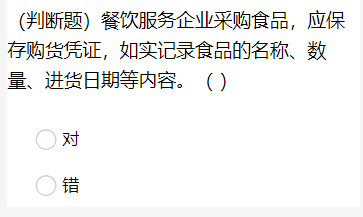
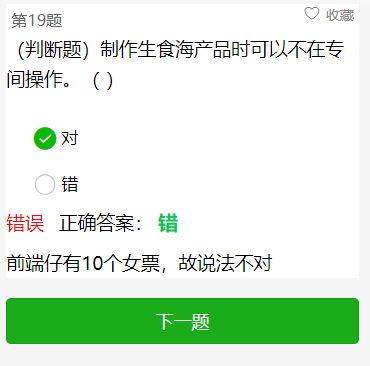

组件位置：file->wxSmoll->judge
将文件夹judge复制到components中
在调用的xx.json或app.json中引入组件：
"usingComponents": { "ysy-judge": "/components/judge/judge" }
页面调用：
< ysy-judge answer radioItems="{{radioItems}}" bind:change="subData" > < / ysy-judge >
let radioItems = {
title: "前端仔找不到女票吗?",//问题标题
answer: "T",//答案,T:正确 ，F:错误
desc: "前端仔有10个女票，故说法不对",//解析
titleImg: "",//图片
};
| 属性名 | 类型 | 说明 |
|---|---|---|
| radioItems | object | 生成题目需要传入的数据，具体看上面注释 |
| answer | boolean | 每做完一题是否马上显示是否正确 |
| 事件名 | 说明 | 回调参数 |
|---|---|---|
| change | 每改变选项是触发 | 对象obj，详见“change回调中属性” |
| 属性名 | 类型 | 说明 |
|---|---|---|
| value | String | 选中的项 |
| ok | boolean | 是否正确 |
| data | object | 该提的数据：如id,图片等 |
食品安全网络考试小程序

